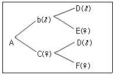
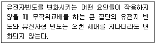
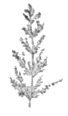

축산기사 (2009-05-10 기출문제)
1과목: 가축육종학
1. 다음 혈통도에서 A의 근교계수는 얼마인가? (단, 반형매간교배에 의하여 생산된 자손의 근교계수를 나타낸다.)

- 0.5
- 0.25
- 0.125
- 0.0625
(정답률: 71%)

2. 양적형질에 관한 설명으로 부적합한 것은?
- 성장률, 유지율, 증체량, 산란수 등은 양적형질이다.
- 변이가 정규분포를 나타낸다.
- 개개의 유전자 작용은 미약하다.
- 개개의 유전자가 독립적으로 작용한다.
(정답률: 63%)
3. 돼지 3원 교잡종 생산시 육질 개선을 위하여 가장 많이 이용되는 품종은?
- 랜드레이스
- 라지화이트
- 라콤
- 듀록
(정답률: 66%)
4. D라는 품종의 평균 산자수가 9.0이고, L이라는 품종의 평균 산자수가 7.0이다. D와 L품종간의 교잡에서 생산된 F1의 평균 산자수는 10.0이었다. 이 형질에 대한 잡종강세율은 얼마인가?
- 38%
- 25%
- 21%
- 17%
(정답률: 70%)
5. 상위유전자 작용에 의한 생쥐의 유전자형이 BB와 Bb인 것은 검은색을, bb인 것을 갈색을 나타낸다. 색을 발현하는 다른 좌위에서 cc와 Cc는 착색을 하도록 하나 cc는 착색을 방해하여 알비노(Albino)가 된다. 유전자형이 CcBb인 것들 사이에 교배가 이루어 졌을 때 새끼 생쥐의 표현형(검은색 : 갈색 : Albino) 의 분리비는?(오류 신고가 접수된 문제입니다. 반드시 정답과 해설을 확인하시기 바랍니다.)
- 9 : 3 : 4
- 12 : 3 : 1
- 9 : 6 : 1
- 9 : 0 : 7
(정답률: 55%)
6. 선발(選拔)의 효과란 무엇인가?
- 새로운 유전자의 창출
- 새로운 유전자의 제거
- 우량 유전자 빈도의 증가
- 우량 유전자 빈도의 감소
(정답률: 86%)
7. 난형 지수는 달걀의 폭과 길이를 캘리퍼스로 측정하여 계산한 비율로 정상치를 벗어나는 경우에는 포장과 수송 도중에서 달걀이 파손될 가능성이 많다. 난형 지수의 정상치로 가장 적합한 것은?
- 0.70 ~ 0.75
- 0.75 ~ 0.80
- 0.80 ~ 0.85
- 0.85 ~ 0.90
(정답률: 43%)
8. 랜드레이스종과 버크셔종 돼지를 교배할 때 F2에서 백색 개체가 나타나는 비율은?
- 1/4
- 2/4
- 3/4
- 4/4
(정답률: 78%)
9. 한 가닥(single strand)의 DNA 염기의 배열이 ATTGC 일 때 이와 상보적인 DNA 염기배열은?
- TAACG
- UAACG
- GCCAT
- TUUGC
(정답률: 81%)
10. 대규모 양돈장에서 잘 이용되는 교배법으로 교잡종의 능력이 가장 우수하게 나타나는 교배법은?
- 3품종 종료교배
- 상호역교배
- 3품종 윤환교배
- 종료 윤환교배
(정답률: 60%)
11. 돼지의 도체형질에 해당하지 않는 것은?
- 도체장
- 배장근단면적
- 도체율
- 사료효율
(정답률: 78%)
12. 비대립유전자간의 상호작용(보족유전자작용)에 따른 유전현상이라고 볼 수 있는 것은?
- 닭의 볏모양
- 육우 쇼트혼(shorthorn)종의 피모색
- 사람의 혈액형
- 토끼의 모색
(정답률: 63%)
13. 다음 설명중 어떤 요인들에 해당하지 않는 것은?

- 무작위 교배
- 선발
- 이주 및 격리
- 돌연변이
(정답률: 49%)
14. 가축의 경제형질에 대한 육종가와 유전모수를 추정 하는 최적 선형불편 예측법(best linear unbiased prediction)을 고안 한 사람은?
- 하디(Hardy)
- 바인베르크(Weinberg)
- 피셔(Fishar)
- 핸더슨(henderson)
(정답률: 63%)
15. 돼지의 154 일령 체중에 대해 개체 선발을 한 결과 암퇘지와 수퇘지에 대한 선발차가 각각 3kg과 5kg이었다. 154일령 체중의 유전력이 0.2인 경우 기대되는 세대별 유전적 개량량은 얼마인가?
- 0.6kg
- 0.8kg
- 1.0kg
- 1.6kg
(정답률: 71%)
16. 육우에서 모체효과(maternal effect)의 영향을 가장 크게 받는 형질은?
- 생시 체중
- 이유시 체중
- 12개월령 체중
- 18개월령 체중
(정답률: 74%)
17. 우리나라에서 축산법령으로 지정된 개량 대상 가축의 범위에 해당되지 않는 것은?
- 한우
- 오리
- 토끼
- 닭
(정답률: 82%)
18. 우리나라 공인 종돈 능력검정소에서 선발지수를 산출 하는데 포함된 형질들로만 구성된 항목은?
- 일당증체량, 사료유구율, 등지방층 두께
- 일당증체량, 사료유구율, 산자수
- 일당증체량, 산자수, 등지방층 두께
- 사료효율, 산자수, 등지방층 두께
(정답률: 64%)
19. 어떤 형질의 유전력을 '1' 이라 가정한다면 이의 의미는?
- 개체간의 차이가 대부분 환경요인의 차이에 의함을 의미
- 개체간의 차이가 전부 유전자간의 차이에 의함을 의미
- 어떤 개체의 형질 발현가가 다른 개체와 전혀 다름을 의미
- 어떤 개체의 형질 별현가가 다른 개체와 동일함을 의미
(정답률: 49%)
20. 근친교배의 표현형 효과에 대한 설명으로 알맞은 것은?
- 성장률 증대
- 태아 사망률 증대
- 성존율 증대
- 고환의 발달 촉진
(정답률: 72%)
2과목: 가축번식생리학
21. 정자형성과 난포발육에 관계하는 호르몬은?
- 황체형성 호르몬(LH)
- 프로게스테론(progesterone)
- 임부융모성 성선자극 호르몬(HCG)
- 난포자극 호르몬(FSH)
(정답률: 72%)
22. 젖소에 있어서 분만 후 비유의 개시를 지배하는 호르몬은?
- 에스트로겐(estrogen)
- 프로게스테론(progesterone)
- 프로락틴(prolactin)
- 옥시토신(oxytocin)
(정답률: 64%)
23. 젖소의 경우 품종별 또는 개체별로 차이를 보이지만 일반 적으로 분만 후 최고유량에 도달하는 시기는 약 얼마인가?
- 분만 후 1 ~ 2주
- 분만 후 2 ~ 4주
- 분만 후 6 ~ 8주
- 분만 후 8 ~ 10주
(정답률: 50%)
24. 가축의 수정적기를 결정하는 대표적인 요인은?
- 발정축의 월령과 체중
- 배란시기와 정자이동시간
- 발정축의 영양 상태
- 일조시간과 환경온도
(정답률: 52%)
25. 수정란이식의 장점이 아닌 것은?
- 가축 개량기간의 단축
- 특정 품종, 계통의 증식
- 가축 유전자원의 보존 가능
- 숙련된 기술 필요
(정답률: 62%)
26. 정자가 정액으로 사출되기 직전까지 저장되어 있는 곳은?
- 정난선
- 정소상체 체부
- 정소상체 미부
- 정관 팽대부
(정답률: 54%)
27. 수가축의 부생식선 중 카우퍼씨선(Cowper's gland)이라고 불리는 것은?
- 정난선
- 전립선
- 요도구선
- 요도선
(정답률: 63%)
28. 성숙한 암컷의 포유가축에서 성선자극호르몬의 결핍, 난소 이상 및 황체퇴행 장해 등에 의해서 난포의 발육이 되지 않은 경우 어떤 증상이 나타나는가?
- 난소낭종
- 위임신
- 사모광증
- 무발정
(정답률: 55%)
29. 생리적 활성이 가장 큰 대표적인 난포 호르몬은?
- estriol
- estradiol-17ß
- eatrone
- progesterone
(정답률: 46%)
30. 1개의 제 1 정모 세포에서 생성되는 정자세포의 수는?
- 1개
- 4개
- 8개
- 16개
(정답률: 72%)
31. 난소에서 분비되는 에스트로겐(estrogen)이 시상하부의 배란 전 방출 조절 중추를 자극하여 GnRH 분비를 유발시킴으로써 뇌하수체로부터 LH를 급격하게 방출시키는 조절기전을 무엇이라 하는가?
- 정(正)의 피드백(positive feedback)
- 부(負)의 피드백(Negative feedback)
- 신경-체액의 조절기전
- 단경로 피드백(short loop feedback)
(정답률: 84%)
32. 태아의 생식 도관의 분화와 발달이 이루어지는 과정에서 웅성 생식도관의 발생원기는?
- 볼프관
- 뮐러관
- 난관
- 정관
(정답률: 61%)
33. 포유동물 산자의 성비를 조절하기 위하여 X-Y정자를 분리하는데 유효한 생명공학 기법은?
- 초자화 동결법(vitrification)
- 관류세포계수기(flow cytometer) 분리법
- 핵이식법(nuclear transplantation)
- 유전자 클로닝(gene cloning)
(정답률: 72%)
34. 성선자극 호르몬(gonadotropin, GTH)의 생리적 기능이 아닌 것은?
- 난포성숙
- 배란
- 황체형성
- 2차 성징
(정답률: 61%)
35. 다음 교배 방식 중 춘기발동(puberty)을 제일 늦추는 것은?
- 근친교배
- 이계교배
- 품종간 교배
- 잡종교배
(정답률: 61%)
36. 배반포의 형성과 발달과정 중 태아로 발달하는 것은?
- 투명대
- 영양막
- 난황막
- 내부세포괴
(정답률: 78%)
37. 그라아프 난포(Graafian foilicle)의 조직학적 구조로 볼 때 구성요소가 아닌 것은?
- 간질세포
- 투명대
- 난모세포
- 과립막세포
(정답률: 54%)
38. 임신중인 동물의 융모막융모의 분포상태에 따른 태반형태의 분류가 바르지 않은 것은?
- 산재성 태반 - 말, 돼지
- 궁부성태반 - 단위동물
- 대상태반 - 개, 고양이
- 원반상태반 - 설치류, 영장류
(정답률: 63%)
39. 복강 내에 위치하는 장복정소의 생리적 결함은 어떤 것인가?
- 양측성 장소인 경우에는 복강내의 높은 온도로 정자 생산이 어렵다.
- 양측성 장소인 경우에는 웅성호르몬 androgen 분비가 어렵다.
- 양측성 장소인 경우에는 교미욕이 떨어진다.
- 편측성(한쪽만 장복) 장복정소의 경우도 수태능력이 없다.
(정답률: 62%)
40. 정자가 수정능력 획득에 의하여 정자두부에서 방출되는 효소 중에서 난자의 투명대를 용해하는 효소는?
- 카테콜아민(catechoiamine)
- 하이포 타우린(hypotaurine)
- 히알루로니다아제(hyaluronidase)
- 아크로신(Acrosin)
(정답률: 67%)
3과목: 가축사양학
41. 농후사료와 조사료를 나눌 때 가소화 영양소 총량(TDN)의 함량을 기준으로 한다면, 농후사료는 가소화 영양소 총량이 몇 % 이상인가?
- 20%
- 30%
- 40%
- 50%
(정답률: 28%)
42. 동물세포의 구성성분일 뿐만 아니라 효소 및 호르몬의 주성성분으로 유전현상 및 생명현상에 관여하는 영양소는?
- 탄수화물
- 지방
- 단백질
- 광물질
(정답률: 76%)
43. 6세 된 착유우의 1일 최고비유량이 32kg이라고 하면 3⑤일 경산우의 착유량은 약 몇 kg 인가?
- 4800
- 6400
- 8000
- 10000
(정답률: 38%)
44. 각 영양소의 기능 설명 중 잘못 연결된 것은?
- Cystine - 황 함유 α-아미노산
- oleic acid - 필수지방산
- Vitamin C - 괴혈병 치료
- 코발트(Co) - Vitamin B12 구성인자
(정답률: 68%)
45. 비육과 관계 깊은 호르몬은?
- 갑상선호르몬
- 뇌하수체후엽호르몬
- 부신피질호르몬
- 난포호르몬
(정답률: 56%)
46. 곡물이 저장중에 호흡작용으로 인하여 발생하는 부산물이 아닌 것은?
- 산소
- 열
- 물
- 탄산가스
(정답률: 53%)
47. 포유자돈을 조기 이유시키는 중요한 원인은?
- 이유 후 모돈의 재발정이 빨리 오기 때문에
- 자돈의 사료비가 절약되기 때문에
- 자돈의 관리가 쉬워지기 때문에
- 자돈의 설사병을 방지할 수 있기 때문에
(정답률: 85%)
48. 돼지의 육질에 관계하는 요인을 설명한 것 중 틀린것은?
- 돼지는 비육되어 체중이 클수록 도체율이 높다.
- 거세하지 않은 수퇘지는 암퇘지나 거세돈에 비하여 증체율과 사료효율이 낮다.
- 단백질의 급원에 따라 도체의 지방대 정육비율이 영향을 받는다.
- 저단백질 사료에 에너지 급여수준을 과다하게 증가시키면 등지방이 두꺼워진다.
(정답률: 59%)
49. 배합사료의 열량을 높이기 위하여 콩기름, 우지(tallow)등을 혼합하는 경우가 있는데 이와 같이 사료에 기름을 첨가하면서 산화되기 쉬우므로 이것을 방지하기 위하여 사용되는 약제들을 무엇이라 하는 가?
- 항미생물제
- 항산화제
- 완충제
- 향미제
(정답률: 80%)
50. 위내 점막세포에서는 강한 산성인 염산(HCl)이 분비 되는데 이 때 분비되는 염산의 기능이 아닌 것은?
- 위에서 미생물에 의해 일어나는 발효 및 부패를 억제한다.
- Fe2+의 흡수를 돕는다.
- 단백질을 변성시키고 이당류의 가수분해를 약간 일으킨다.
- Pepsin(펩신)을 환력이 있는 pepsinogen(펩시노겐)으로 만든다.
(정답률: 47%)
51. 다음 중 사료를 영양가에 따라 분류한 것은?
- 조사료, 농후사료
- 낙농사료, 고기소 사료, 돼지사료, 닭사료
- 가루사료, 알곡사료, 펠릿사료
- 에너지사료, 단백질사료, 무기질사료
(정답률: 55%)
52. 옥수수·대두박 중심으로 만든 돼지사료에 있어서 제한아미노산이 되는 것은?
- 메티오닌
- 글리신
- 말기닌산
- 트립토판
(정답률: 74%)
53. 다음 반추위 내에서 전분을 분해·이용하는 세균류에 해당 하지 않는 것은?
- 숙시니코나스(succiniconas)
- 펩토스트렙토코시(peptostreptococci)
- 아밀로필루스(amylophillus)
- 아밀롤리티카(amylolytica)
(정답률: 60%)
54. 젖소의 조사료를 세절, 분쇄 또는 펠릿화하면 나빠지는 것은?
- 사료섭취량
- 젖 생산량
- 증체량
- 유지방의 함량
(정답률: 69%)
55. 배합사료 제조시 사료회사에서 가장 많이 이용되는 가공처리 법은?
- 익스트루딩
- 볶기(roasting)
- 펠리팅
- 후레이킹
(정답률: 51%)
56. 돼지 스트레스 증후군(PSS)은 리아노딘 리셉터(ryanodine recepter)의 몇 번째 염기가 시토신(cytocine)에서 티민(thymine)으로 돌연변이를 일으켜서 유발되는가?
- 1772
- 1792
- 1823
- 1843
(정답률: 22%)
57. 유지율이 3.3%인 우유를 1일 20kg 생산할 경우 유지율 4%보정유(FCM)로 환산하면 몇 kg 인가? (단, Gaines(1928)의 식을 이용할 것)
- 13.7
- 17.9
- 20.5
- 21.3
(정답률: 67%)
58. 피틴(phytin)태 형태로 되어 있어 돼지사료에서 소화율이 낮고, 이로 인해 환경을 오염시키는 물질은?
- 칼슘
- 인
- 구리
- 칼륨
(정답률: 60%)
59. 젖소는 일정기간 건유를 하는데, 그 필요성으로 적절하지 않은 것은?
- 유방조직의 휴식
- 태아의 발육
- 영양소 축적
- 유지율 저하 예방
(정답률: 44%)
60. 단미사료공정규격(농림부고시 1999-39호)에서는 섬유질사료의 조섬유(Crude fiber)함량이 건물기준으로 최소한 몇 %이상 함유되어 있어야 한다고 규정하고 있는가?
- 최소 10% 이상
- 최소 12% 이상
- 최소 15% 이상
- 최소 18% 이상 사료작물학 및 초지학
(정답률: 50%)
4과목: 사료작물학 및 초지학
61. 알팔파의 가료가치 중 틀린 것은?
- 가축의 기호성이 좋다.
- Ca의 함량이 낮다.
- 소화율이 높다.
- 단백질 공급량이 많다.
(정답률: 76%)
62. 혼파조합의 기본원칙이 아닌 것은?
- 혼파되는 초종은 서로 경합능력이 비슷해야 한다.
- 단순혼파과 중심이 되어야 한다.
- 단위면적당 총 종자량 많아야 한다.
- 기호성이 비슷한 초종끼리 조합시킬수록 유리하다.
(정답률: 41%)
63. 다음 중 집약 초지조성의 순서가 맞는 것은?
- 경운 및 정지 → 장애물제거 → 파종 → 시비 → 복토 → 진압
- 장애물제거 → 경운 및 정지 → 시비 → 파종 → 복토 → 진압
- 장애물제거 → 경운 및 정지 → 파종 → 시비 → 파종 → 복토
- 장애물제거 → 파종 → 경운 및 정지 → 시비 → 복토 → 진압
(정답률: 59%)
64. 사일리지 조제시 발생하는 양분손실을 잘못 설명한 것은?
- 호흡에 의한 손실 - 수분함량, 세절길이, 충진, 밀봉 등에 영향을 받는다.
- 수확(기계적) 손실 - 수확작업, 예건, 운반 등에서 오는 손실로 보통 건조제보다 많다.
- 발효에 의한 손실 - 재료의 수분함량, 재료의 당분, 유산균의 종류 등에 따라 달라진다.
- 삼출액에 의한 손실 - 재료 수분함량이 68% 이상일 때, 특히 탑형 사일로에서 높다.
(정답률: 36%)
65. 다음은 목초를 우리말로 표기한 것이다. 이중에서 화본과 목초에 속하는 것은?
- 전동싸리
- 매듭풀
- 오리새
- 비수리
(정답률: 42%)
66. 초지나 사료작물에 가끔 큰 피해를 주는 멸강나방의 유충 방제에 대한 설명으로 가장 옳은 것은?
- 1년에 한번씩 번식하므로 성충을 방제하는 것이 가장 효과적이다.
- 주로 콩과에 큰 피해를 주므로 벼과 위주의 혼파조합이나 벼과와 혼파한다.
- 한번 발생하면 빠른 속도로 전 포장으로 퍼지므로 조기 발견과 방제가 효과적이다.
- 어떠한 경우에도 살충제에 의한 방제는 하지 말아야 한다.
(정답률: 73%)
67. 오차드그라스, 톨페스큐, 라디노클로버로 된 혼파초지에서 예취 높이를 항상 3cm 이하로 하였다. 가장 우점이 될 수 있는 초종은 어느것인가?
- 오차드그라스
- 톨페스큐
- 라디노클로버
- 차이가 없다
(정답률: 38%)
68. 방목 이용시 초지관리로 적합한 것은?
- 방목 방법은 연속방목이 효율적이다.
- 불식과번식(不食過繁殖)는 그대로 내버려두면 된다.
- 방목 개시 적기는 초장이 20 ~ 25cm 정도 일 때이다.
- 여름철 강우시 방목하면 채식량이 증가한다.
(정답률: 67%)
69. 다음 사일로 중 건물손실률이 가장 높은 것은?
- 벙커사일로
- 스택사일로
- 기밀사일로
- 탑형 사일로
(정답률: 33%)
70. 다음 그림의 이삭모양은 어떤 화서의 모양인가?

- 원통상화서
- 수상화서
- 원추화서
- 총상화서
(정답률: 42%)
71. 목초의 재생에 가장 큰 영향을 미치는 것은 예취높이인데, 높이 얘취하는 것과 낮게 예취하는 방법 중 높이 베기의 장점이라고 할 수 없는 것은?
- 화본과의 경우 낮게 베기 보다 저장양분을 많게한다.
- 목초의 병해충 제거효과가 낮게 베기 보다 크다.
- 화본과는 양·수분의 흡수력에 낮게 베기 보다 크다.
- 높이 베기 할 때 알팔파는 생장점의 수가 많게 된다.
(정답률: 60%)
72. 사료작물을 3회 이상 예취하여 생초로 이용하는 것이 유리한데 오차드 그래스의 예취 높이로 가장 적당한 것은? (단, 3년째 수량을 기준으로 한다.)
- 19 ~ 20cm
- 2 ~ 6cm
- 10 ~ 15cm
- 6 ~ 9cm
(정답률: 48%)
73. 다음중 염해에 가장 강하여 간척지 등에 재배가 가능할 것으로 보이는 사료작물은?
- 툴 휘트그라스(tall wheatgrass)
- 옥수수(corn)
- 스므스 브롬그라스(smooth bromegrass)
- 호밀(rye)
(정답률: 40%)
74. 저수분사일리지에 대한 설명으로 옳지 못한 것은?
- 재료의 수분함량을 약 50%로 얘건하여 사일리지를 만드는 방법이다.
- 발효가 억제되어 pH가 일반 사일리지에 비해 높고 건물손실량이 적다.
- 침출액에 의한 건물손실이 없고 겨울에 결빙의 염려가 적다.
- 낙산이나 암모니아태질소의 생성량이 많아 불쾌한 냄새로 기호성이 떨어진다.
(정답률: 71%)
75. 방목지 3ha에 500kg의 착유우 12두와 300kg의 육성우 10두를 방목시키려면 이 목구의 방목밀도(放牧密屠)는?
- 3가축두수/ha
- 6가축두수/ha
- 9가축두수/ha
- 12가축두수/ha
(정답률: 68%)
76. 사일리지 제조 과정에서 가장 중요하고 유익한 발효는?
- 개미산 발효(formi acid fermentation)
- 낙산발효(butyric acid fermentation)
- 초산발효(acetic acid fermentation)
- 젖산발효(lactic acid fermentation)
(정답률: 67%)
77. 다음 중 산성토양의 특징을 잘 나타낸 것은?
- 알루미늄과 양간의 활성이 높아진다.
- 철, 구리, 아연 및 붕소의 용해도가 낮아진다.
- 인산 흡수계수가 낮아진다.
- 치환성 칼슘과 마그네슘 함량이 높아진다.
(정답률: 24%)
78. 콩과목초 종자들의 발아율이 낮은 이유는?
- 일광 요구성
- 떡잎의 병해
- 종자의 미숙
- 종피의 불투수성
(정답률: 46%)
79. 초지 조성을 위한 작업 단계를 가장 바르게 나열한 것은?
- 쇄토 → 비료, 종자살포 → 석회살포 → 경운 → 복토 →진압
- 경운 → 석회살포 → 쇄토 → 비료, 종자살포 → 복토 → 진압
- 비료, 종자살포 → 경운 → 석회살포 → 쇄토 → 복토 → 진압
- 석회살포 → 비료, 종자살포 → 경운 → 쇄토 → 복토 → 진압
(정답률: 62%)
80. 불경운 초지개량의 특징이 아닌 것은?
- 종자와 토양의 접촉이 어려워 발아와 정착이 어렵다.
- 시간과 비용투입에 비하여 개량 성과가 낮을 경우가 있다.
- 개발은 신속하나 초지의 생산성 증가는 더디다.
- 기계 사용이 불가능한 지대는 개발이 불가능하다.
(정답률: 77%)
5과목: 축산경영학 및 축산물가공학
81. 축산물 수입 자유화의 대응책으로 적합하지 못한 것은?
- 신기술의 개발 · 보급
- 생산비의 절감
- 축산물 생산의 차별화
- 수입사료곡물에 대한 관세의 대폭적인 인상
(정답률: 72%)
82. 축산노동력의 특수성으로 옳지 않은 것은?
- 노동력의 다양성
- 노동력의 지휘 편리성
- 노동력의 중노동성
- 노동력의 이동성
(정답률: 48%)
83. 경영규모 및 형태가 비슷한 많은 농가들을 조사하여 그 평균치를 비교기준치로 정한 뒤 진단농가와 비교하는 진단방법은?
- 직접비교법
- 부문비교법
- 내부비교법
- 표준비교법
(정답률: 41%)
84. 축산경영의 특징 중 경종농업에서 생산되는 유기물을 가축에 급여함으로써 축물산을 생산한다는 것은?
- 2차 생산의 성격
- 간접적 토지관계
- 물량감소의 성격
- 생산물의 저장
(정답률: 72%)
85. 양돈경영에서 비육돈 300두를 1인이 관리하는 것보다 500두를 관리하는 것이 더 유리할 때가 있다. 이와 같이 변화중 생산규모가 확대됨에 따라 평균생산비는 감소하고 수익이 체중하는 현상을 설명한 가장 적합한 용어는?
- 규모의 경제성
- 수확의 체감성
- 손실의 최소화
- 선입선출
(정답률: 72%)
86. 축산조수입이 1억, 경영비 5000만원, 생산비 7000만원, 지대(地代)가 1000만원 일 때 축산 순수익은 얼마인가?
- 6000만원
- 4000만원
- 3000만원
- 5000만원
(정답률: 64%)
87. 일정한 자원으로 2종류 이상의 생산물을 생산할 때 각 생산물의 가능한 생산량 조합을 연결한 선을 무엇이라고 하는가?
- 총생산 가능곡선
- 생산 가능곡선
- 한계 생산곡선
- 동일생산력 가능곡선
(정답률: 60%)
88. 양돈 비육경영의 수익성 향상 방안으로 부적당한 것은?
- 판매돈 1두단 매상고를 크게 할 것
- 판매돈 1두당 표준비용을 절감할 것
- 사고율을 낮출 것
- 육성율을 높일 것
(정답률: 34%)
89. 다음중 정액법에 의 한 젖소의 감가상각비(D)를 계산하는 공식을 옳게 표현한 것은?
- D = 젖소의 기초 가격 – 폐우가격 / 내용년수
- D = 젖소의 현재 가격 – 폐우가격 / 내용년수
- D = 젖소의 기초 가격 – 폐우가격 – 운임비 / 내용년수
- D = 젖소의 현재 가격 – 폐우가격 – 폐우운임비 / 내용년수
(정답률: 55%)
90. 하루에 25kg의 우유를 생산하는 착유우에 농후사료를 추가적으로 3kg을 더 급여함에 따라 우유가 27kg으로 증가되었다. 이 때 우유 kg당 가격이 600원이라고 하면 농후사료가격이 얼마일 때 수익 최대화를 이룰수 있는가?
- 250원
- 300원
- 350원
- 400원
(정답률: 28%)
91. 달걀 생산비를 절감할 수 있는 방법으로 가장 부적합한 것은?
- 구입사료의 증가
- 산란율의 제고
- 산란계 육성율의 제고
- 산란계 사육규모의 확대
(정답률: 67%)
92. 축산경영 분석을 위한 대차대조표의 대변(貸邊)에 기재되는 항목은?
- 당좌예금
- 미수입금
- 미지불금
- 외상매출금
(정답률: 54%)
93. 축산경영에서 자본재를 고정자본재와 유동자본재로 분류시 고정자본재에 속하는 것은?
- 토지개량설비
- 사료
- 동물약품
- 비육우
(정답률: 67%)
94. 가축사육시설 단위면적당 적정 가축사육기준에서 제시되고 있는 계류식 우사의 비육우 1두당 소요 면적은?
- 4m2
- 5m2
- 6m2
- 7m2
(정답률: 37%)
95. 어느 낙농농가에 대한 경영분석 결과 젖소 1두당 년간 평균 조수익은 210만원 이었으며, 이때 변동비는 63만원 이었고 총 고정비는 126만원이었을 때 손익분기점의 조수익(순익분기점)은?
- 210만원
- 180만원
- 150만원
- 126만원
(정답률: 44%)
96. 두 생산물간의 한계대체율이 부(-)를 나타내고, 절대값이 체증하는 경우의 두 생산물은?
- 보완생산물
- 경합생산물
- 결합생산물
- 보합생산물
(정답률: 46%)
97. 다음 중 축산경영규모의 척도가 아닌 것은?
- 가축 사육두수
- 경영자 연령
- 사료작물 재배인력
- 고정자본 투자액
(정답률: 78%)
98. 축산경영의 생산함수 분석에서 한계생산물이 평균생산물과 동일 할 때 평균 생산물은?
- 최소가 된다.
- 최대가 된다.
- (0) 이 된다.
- 평균이 된다.
(정답률: 71%)
99. 축산경영의 궁극적인 목표는?
- 소득 증대 및 순이익의 극대화
- 생산기술의 극대화
- 조직의 극대화
- 생산량의 극대화
(정답률: 56%)
100. 낙농경영의 성과 분석을 위한 주요 지표가 아닌것은?
- 유사비(乳詞比)
- 유지율(乳脂率)
- 연간산유량(年間産乳量)
- 두당지육생산량(頭堂枝肉生産量)
(정답률: 61%)